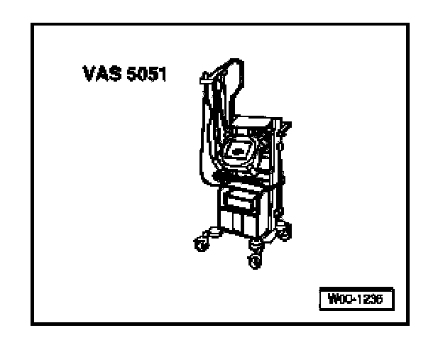

On Board Diagnostic (OBD), Functions
On Board Diagnostic (OBD), Functions
The automatic vertical headlight range control modules are controlled by an internal microprocessor with On Board Diagnostic (OBD) capability. If malfunctions occur in monitored sensors and components, Diagnostic Trouble Codes (DTC) will be stored in memory.
Troubleshoot automatic vertical headlight range control malfunctions by performing OBD program. Use VAS 5051 Vehicle Diagnostic Testing and Information System in mode "Guided Fault Finding".
Headlight range control modules must be coded according to vehicle equipment and market version.
Coding, initiating

- VAS 5051 Vehicle Diagnostic Testing and Information System
- Diagnosis cable VAS 5051/1 or VAS 5051/3